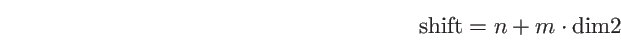
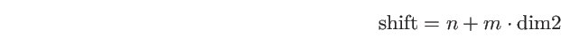
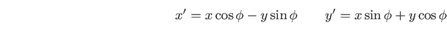
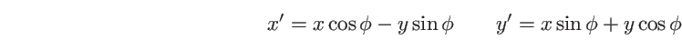

| zob. operator alternatywy bitowej
|| zob. operator alternatywy logicznej
~ zob. operator negacji bitowej
! zob. operator negacji logicznej
& zob. odnośnik
& (op. binarny) zob. operator koniunkcji bitowej
& (op. unarny) zob. operator wyłuskania adresu
&& zob. operator koniunkcji logicznej
-- zob. operator zmniejszenia
<< zob. operator wstawiania do strumienia
>> zob. operator wstawiania do strumienia
^ zob. operator różnicy symetrycznej
* zob. operator wyłuskania wartości
++ zob. operator zwiększenia
:: zob. operator zasięgu
__linux__ 3.2
_WIN32 3.2
abort 22.1
acc.cpp (plik) 14.2
accout.cpp (plik) 14.4
Ada zob. języki programowania
adjustfield 16.3.1
ADL 15.4
aggreg.cpp (plik) 14.8
agregat 14.8
agrtab.cpp (plik) 14.9
algorytm 24.2
Euklidesa 11.8
modyfikujący 24.2.1
niemodyfikujący 24.2.1
sortowania przez wstawianie 12.3 | 13.1
sortujący 24.2.1
alignment zob. wyrównanie
allo.cpp (plik) 12.2
Anjuta 1.1.1
app (tryb otwarcia) 16.5
append 17.2.2
argument
domyślny 11.4
wywołania 2.4
argument funkcji 11.3
domyślny 11.4 | 14.4 | 14.6
referencyjny 11.6
argument wywołania zob. argument
argumenty.cpp (plik) 2.4
arr3dim.cpp (plik) 18.4.3
array 8.9.4
Arrays.cpp (plik) 5.6
arytmwsk.cpp (plik) 5.3
ASCII 4.2 | 4.2 | 5.4 | 10.1
assert 11.12 | 13.2
assign 17.2.2
at 17.2.2 | 24.1.1
at.cpp (plik) 24.1.1
ate (tryb otwarcia) 16.5
atof 17.1.3
atoi 17.1.3
atol 17.1.3
atomowa zmienna 7.4.1
auto zob. zmienna automatyczna | 4.1
autodecl.cpp (plik) 4.1
autoret.cpp (plik) 11.14
back 24.1.1
bad 16.6
bad_alloc 12.2 | 22.7
bad_cast 22.7
bad_exception 22.7
bad_typeid 22.7
badbit 16.6
basefield 16.3.1
bash 22.1
begin 17.2.2 | 24.1.2
big endian 5.3
big-endian 16.5
binary (tryb otwarcia) 16.5
binding zob. wiązanie
bits.cpp (plik) 9.2.7
blok 8.5
bool 4.4
boolalpha 16.3.1
brace-init 4.1
break zob. instrukcja zaniechania
byte-code zob. kod bajtowy
.C 2.1 | 2.1 | 3.2 | 23.1.1
C++11 4.1 | 4.5 | 5.1 | 7.4.2 | 11.2 | 11.2 | 11.5 | 11.12 | 11.13 | 13.1 | 15.3.2
C++11 standard 4.5
C-napis zob. napis w stylu C
c_str 17.2.2
calloc 12.5
CamelCase 7.1
cast.cpp (plik) 20.1
catch zob. instrukcja obsługi wyjątku | 8.13 | 22.2
cctype 17.1.2
cerr 16.1.1
cerrno 17.1.3
char zob. typy danych | 4.2
char16_t 4.2
char32_t 4.2
cin 2.2 | 2.2.2 | 16.1 | 16.1.1
ciąg Fibonacciego 11.8
class 11.14
classtab.cpp (plik) 14.9
clear 16.6 | 17.2.2
clog 16.1.1
Code::Blocks 1.1.1
CodeWarrior 1.1.1
compare 17.2.2
compr.cpp (plik) 24.2.2
concast.cpp (plik) 19.2.1
condes.cpp (plik) 20.2
confiel.cpp (plik) 15.4
const zob. zmienna ustalona | 5.1 | 7.4.2
const_cast 19.2.1
const_iterator 24.1.2
const_reverse_iterator 24.1.2
constexpr 5.1 | 7.4.2
constexpr.cpp (plik) 7.4.2
constit.cpp (plik) 24.1.2
constmet.cpp (plik) 15.1
continue zob. instrukcja kontynuowania
convfrom.cpp (plik) 19.1.2
convto.cpp (plik) 19.1.1
cop.cpp (plik) 20.2
copy 17.2.2 | 24.2.1
count_if 24.2.1 | 24.3
cout 2.2 | 16.1 | 16.1.1
.cpp 2.1 | 23.1.1
cstdlib 12.5 | 17.1.3
cstring 12.6 | 17.1.1
cstru.cpp (plik) 13.1
cvscpp.c (plik) 3.2
.cxx 23.1.1
czas.cpp (plik) 13.1
czyt.cpp (plik) 2.2.2
czytab.cpp (plik) 5.5.2
czytnf.cpp (plik) 16.4.1
dataczas.cpp (plik) 3.3
__DATE__ 3.3
dec 16.3.1
dec (manipulator) 16.3.2.1
decltype 4.1
#define 3.2
defined 3.2
definicja 7.1
definicja funkcji 11.2
dekl.cpp (plik) 6.1
dekl1.cpp (plik) 4.2
deklaracja 7.1 | 8.3
deklaracja funkcji 11.2
deklaracja użycia 23.2
deklaracja zapowiadająca 13.1
dekrementacja zob. operator zmniejszenia
delegconstr.cpp (plik) 15.3.2
delegowanie (konstruktora) 15.3.2
delete 12.3 | 12.3
deque 24.1.2
dereferencja zob. operator wyłuskania wartości
destruktor 14.7
wirtualny 20.6
wyjątki w destruktorze 22.4
dist.cpp (plik) 24.1.3
distance 24.1.3
.dll 23.1.1
do zob. instrukcja iteracyjna | 8.9.2
do-while 8.9.2
dopasowanie
dokładne 11.11
po konwersji niejawnej 11.11
po konwersji trywialnej 11.11
po konwersji zdefiniowanej przez użytkownika 11.11
po promocji 11.11
double zob. typy danych
dynamic_cast 19.2.3 | 22.7 | 25.2
dyncast.cpp (plik) 19.2.4
dyrektywa użycia 23.2
dyrektywy preprocesora 3.1
#define 3.2
defined 3.2
#elif 3.2
#else 3.2
#endif 3.2
#error 3.2
#if 3.2
#ifdef 3.2
#ifndef 3.2
#include 2.1 | 3.2 | 23.1.1
#undefine 3.2
dziedziczenie 20.
dżoker 1.1.1
early binding zob. wiązanie, wczesne
Eclipse 1.1.1
#elif 3.2
else zob. instrukcja warunkowa
#else 3.2
empty 17.2.2
emulstr.cpp (plik) 17.1.1
end 17.2.2 | 24.1.2
#endif 3.2
endl 2.2.1
endl (manipulator) 16.3.2.1
ends (manipulator) 16.3.2.1
enum 4.5
enumeracja zob. wyliczenia
enumeration zob. wyliczenia
enums.cpp (plik) 4.5
EOF 16.4.1 | 16.6
eofbit 16.6
epoka 13.1
erase 17.2.2 | 24.1.3 | 24.3
errno 17.1.3
#error 3.2
etykieta 8.2
Euklides 11.8
exceptions 22.7
excpt.cpp (plik) 22.2
executable zob. plik wykonywalny
exit 22.1
explicit 19.1.1
exter1.cpp (plik) 7.3.2
exter2.cpp (plik) 7.3.2
extern zob. zmienna zewnętrzna
fail 16.6
failbit 16.6
false 4.4
fib.cpp (plik) 11.8
Fibonacci zob. ciąg Fibonacciego
figur.cpp (plik) 20.4
__FILE__ 3.3
fill 16.3.1
find 17.2.2 | 24.2.1
find_first_not_of 17.2.2
find_first_of 17.2.2
find_if 24.2.1
find_last_not_of 17.2.2
find_last_of 17.2.2
fixed 16.3.1
fixed (manipulator) 16.3.2.1
flaga
adjustfield 16.3.1
basefield 16.3.1
boolalpha 16.3.1
dec 16.3.1
fixed 16.3.1
floatfield 16.3.1
hex 16.3.1
internal 16.3.1
left 16.3.1
noboolalpha 16.3.1
noshowbase 16.3.1
noshowpoint 16.3.1
noshowpos 16.3.1
noskipws 16.3.1
nounitbuf 16.3.1
nouppercace 16.3.1
oct 16.3.1
right 16.3.1
scientific 16.3.1
showbase 16.3.1
showpoint 16.3.1
showpos 16.3.1
skipws 16.3.1
unitbuf 16.3.1
uppercace 16.3.1
flagi formatowania zob. formatowanie
flags 16.3.1
flags.cpp (plik) 16.3.1
float zob. typy danych
floatfield 16.3.1
flush (manipulator) 16.3.2.1
fmtflags 16.3.1
for zob. instrukcja iteracyjna | 8.9.3
for_each 24.2.1
foreach.cpp (plik) 8.9.4
formatowanie 16.2 | 16.3
flaga stanu 16.3.1
Fortran zob. języki programowania
free 12.5
front 24.1.1 | 24.1.3
fstream 16.1 | 16.5
ftime 13.1
__FUNCTION__ 3.3
function.cpp (plik) 11.3
fundefnew.cpp (plik) 11.2
funk.cpp (plik) 2.3
funkcja 2.3 | 11.1
abort 22.1
alternatywna postać deklaracji 11.2
append 17.2.2
argument 11.3
assert 11.12
assign 17.2.2
at 17.2.2 | 24.1.1
atan 11.12
atof 17.1.3
atoi 17.1.3
atol 17.1.3
back 24.1.1
begin 17.2.2 | 24.1.2
bezrezultatowa 11.2
c_str 17.2.2
calloc 12.5
clear 16.6 | 17.2.2
compare 17.2.2
copy 17.2.2 | 24.2.1
count_if 24.2.1 | 24.3
definicja 11.2
deklaracja 11.2
distance 24.1.3
empty 17.2.2
end 17.2.2 | 24.1.2
erase 17.2.2 | 24.1.3 | 24.3
exceptions 22.7
exit 22.1
fill 16.3.1
find 17.2.2 | 24.2.1
find_first_not_of 17.2.2
find_first_of 17.2.2
find_if 24.2.1
find_last_not_of 17.2.2
find_last_of 17.2.2
flags 16.3.1
for_each 24.2.1
free 12.5
front 24.1.1 | 24.1.3
ftime 13.1
gcount 16.4.1
get 16.4.1
getline 16.4.1 | 17.2.2
globalna 2.1 | 11. | 11.1
ignore 16.4.1
insert 17.2.2 | 24.1.3
isalnum 17.1.2
isalpha 17.1.2
iscntrl 17.1.2
isdigit 17.1.2
isgraph 17.1.2
islower 17.1.2
isprint 17.1.2
ispunct 17.1.2
isspace 17.1.2
isupper 17.1.2
isxdigit 17.1.2
konwertująca 17.1.3
lambda 11.13
length 17.2.2
main 2.1 | 2.1
malloc 12.5
max_element 24.3
memchr 12.6
memcmp 12.6
memcpy 12.6
memmove 12.6
memset 12.6
merge 24.2.1
metoda 14.4
min_element 24.3
nagłówek 11.2
o zmiennej liczbie argumentów 11.5 | 11.5
operująca na C-napisach 17.1.1
otwarta 11.10
parametr formalny 11.2
peek 16.4.1
pop_back 24.1.1
pop_front 24.1.3
precision 16.3.1
prototyp 11.2
przeciążona 11.11 | 14.6
push_back 17.2.2 | 24.1.1
push_front 24.1.3
put 16.4.2
putback 16.4.1
rand 8.9.2
rbegin 17.2.2 | 24.1.2
rdstate 16.6
read 16.4.1
realloc 12.5
rekurencyjna 11.8
remove 24.2.1
remove_if 24.3
rend 17.2.2 | 24.1.2
replace 17.2.2
resize 17.2.2
reverse 24.2.1
rezultatowa 11.2
rfind 17.2.2
rozwijana 11.2 | 11.10 | 14.4
seekg 16.5
seekp 16.5
set_terminate 22.1
set_unexpected 22.5
setf 16.3.1
setstate 16.6
size 17.2.2 | 24.1.1
sort 24.2.1 | 24.3
srand 8.9.2
statyczna 11.9 | 14.5
str 16.7.2
strcat 17.1.1
strchr 17.1.1
strcmp 17.1.1
strcoll 17.1.1
strcpy 17.1.1
strcspn 17.1.1
strlen 17.1.1
strncat 17.1.1
strncmp 17.1.1
strncpy 17.1.1
strpbrk 17.1.1
strrchr 17.1.1
strspn 17.1.1
strstr 17.1.1
strtod 17.1.3
strtok 17.1.1
strtol 17.1.3
strtoul 17.1.3
substr 17.2.2
swap 17.2.2
sygnatura 11.2 | 11.11
szablon 11.14
tellg 16.5
tellp 16.5
terminate 22.1
tolower 17.1.2
toupper 17.1.2
unexpected 22.5
unget 16.4.1
unsetf 16.3.1
what 22.7
width 16.3.1
wklejana 11.10
write 16.4.2
wywołanie 2.3 | 11.3
z argumentami domyślnymi 11.4
zamknięta 11.10 | 11.10
zaprzyjaźniona 15.4 | 15.4
funkcja otwarta zob. funkcja rozwijana
funret.cpp (plik) 11.12
gcd.cpp (plik) 11.8
gcount 16.4.1
Geany 1.1.1
get 16.4.1
getline 16.4.1 | 17.2.2
globalna funkcja 11.
good 16.6
goodbit 16.6
goto zob. instrukcja skoku | 8.11
.h 2.1 | 23.1.1
helloWorld.cpp (plik) 2.1
hex 16.3.1
hex (manipulator) 16.3.2.1
hex.cpp (plik) 8.8
hier.cpp (plik) 22.3
hier1.cpp (plik) 22.3
hierob.cpp (plik) 22.3
HUGE_VAL 17.1.3
if zob. instrukcja warunkowa
#if 3.2
#ifdef 3.2
#ifndef 3.2
ifstream 16.1 | 16.5
ignore 16.4.1
in (tryb otwarcia) 16.5
#include 2.1 | 3.2 | 23.1.1
indeksowanie 9.2.2
inf 17.1.3
info 1.1.1
inh.cpp (plik) 20.3
inhas.cpp (plik) 20.3
inher.cpp (plik) 20.1
inicjalizacja 4.1
inkrementacja zob. operator zwiększenia
inline zob. funkcja rozwijana
input iterator 24.1.2
insert 17.2.2 | 24.1.3
instrukcja 8.1
catch 8.13
do-while 8.9.2
for 8.9.3
goto 8.11
grupująca 8.5
iteracyjna 8.9
kontynuacji 8.10
obsługi wyjątku 8.13
powrotu 8.9 | 8.12
pusta 8.4
skoku 8.2 | 8.9 | 8.11
throw 8.13
try 8.13
typedef 11.12
warunkowa 8.7
while 8.9.1
wyboru 8.8
wyrażeniowa 8.6
zaniechania 8.2 | 8.8 | 8.9
złożona 2.1
int zob. typy danych | 4.2
int16_t 4.2.1
int32_t 4.2.1
int64_t 4.2.1
int8_t 4.2.1
internal 16.3.1
internal (manipulator) 16.3.2.1
intfilo.cpp (plik) 16.7.1
intstr.cpp (plik) 16.7.2
ios 16.3.1
ios::failure 22.7
ios_base 16.3.1
iostream 16.1
isalnum 17.1.2
isalpha 17.1.2
iscntrl 17.1.2
isdigit 17.1.2
isgraph 17.1.2
islower 17.1.2
isprint 17.1.2
ispunct 17.1.2
isspace 17.1.2
istream 2.2.2 | 16.1
istringstream 16.1 | 16.7.2
istrstream 16.1 | 16.7.1
isupper 17.1.2
iswew.cpp (plik) 15.4
isxdigit 17.1.2
iter.cpp (plik) 24.1.2
iterator 17.2.1 | 24.1.2
dwukierunkowy 24.1.2
jednokierunkowy 24.1.2
o dostępie bezpośrednim 24.1.2
odwrotny 24.1.2
ustalony 24.1.2
ustalony 24.1.2
wejściowy 24.1.2
wyjściowy 24.1.2
jan.cpp (plik) 2.2.1
jednolita inicjalizacja 4.1
jednostka translacji 23.1
języki programowania
Ada 1.1 | 2.3
C# 18. | 20.
Fortran 1.1 | 2.3 | 5.5 | 5.5.1 | 11.2 | 12.2
Haskell 18.
Java 1.1 | 2.1 | 2.1 | 4.1 | 4.2 | 4.6.1 | 4.6.2 | 5.2 | 8.2 | 8.6 | 8.7 | 8.10 | 9.2.2 | 9.2.6 | 9.2.7 | 9.2.7 | 9.2.7 | 10.2 | 11.1 | 11.1 | 11.6 | 12. | 12.1 | 12.2 | 12.2 | 13. | 14.1 | 14.2 | 14.8 | 14.9 | 15.5 | 17.2.2 | 18. | 18.1 | 19.2 | 20. | 20.1 | 20.1 | 20.4 | 20.4 | 20.5 | 20.7 | 22. | 24.
Lisp 12.
Pascal 1.1 | 4.1 | 11.2
PHP 2.1
Python 2.3 | 11.2 | 12. | 12.2 | 14.4 | 18. | 20.4 | 22.
Smalltalk 12.
KDevelop 1.1.1
Kernighan, B. 2.1
klasa 14.1
abstrakcyjna 20.5
bazowa 20.1
domieszkowa 20.7
konkretna 20.5
lokalna 15.5
otaczająca 15.5
pierwotna 20.
pierwszorzędowa 14.1
pochodna 20.1
pole 14.3
statyczne 14.3
polimorficzna 20.4
sekcje 14.2
składowa 14.1
szablon 21.1
zagnieżdżona 15.5
zasięg 14.2 | 14.3
klasa pamięci 7.3
klawew.cpp (plik) 15.5
kod bajtowy 1.1
kod uzupełnień do dwóch 4.2
Koenig lookup 15.4
Koenig, A. 15.4
kolejka dwustronna 24.1.2
kolekcja 24.1
komparator 24.2.1
konkatenacja 17.1.1
konkretyzacja 11.14
konsolidator zob. linker
konstruktor 14.6
delegujący 15.3.2
domyślny 14.6
konwertujący 19.1.1
kopiujący 15.3.1
wyjątki w konstruktorze 22.4
kontrola typu 4.1
konw.cpp (plik) 10.1
konwersja zob. operator konwersji | 4.6.2 | 9.2.2 | 19.
do typu definiowanego 19.1.1
dynamiczna 19.2.3 | 20.1 | 25.2
elementów wyliczenia 4.5
od typu definiowanego 19.1.2
standardowa 10.1
statyczna 19.2.2 | 20.1
trywialna 11.11
uzmienniająca 19.2.1
wymuszana 19.2.4
kopiow.cpp (plik) 15.3.1
kostki.cpp (plik) 8.9.2
krol.cpp (plik) 13.1
krols.cpp (plik) 17.2.2
kwalifikacja 14.2
l-wartość 7.5 | 9.2.2
labincpp.cpp (plik) 8.2
lambda zob. funkcja lambda
lambdas.cpp (plik) 11.13
late binding zob. wiązanie, późne
left 16.3.1
left (manipulator) 16.3.2.1
length 17.2.2
lengths.cpp (plik) 4.1
__LINE__ 3.3
linker 1.1 | 1.1.1 | 23.1
lista 13.1
lista dziedziczenia 20.1 | 20.7
lista inicjalizacyjna 15.3.2 | 20.2
lista.cpp (plik) 18.3.1
litera.cpp (plik) 18.4.2
little endian 5.3
little-endian 16.5
littlebig.cpp (plik) 5.3
lokalizator 16.5
long zob. typy danych | 4.2
long double zob. typy danych
long int 4.2
long long zob. typy danych | 4.2
long long int 4.2
lval.cpp (plik) 7.5
macierze.cpp (plik) 12.4
main zob. funkcja | 2.1
makro 3.2
malloc 12.5
man 1.1.1
manb.cpp (plik) 16.3.2.1
maniparg.cpp (plik) 24.2.2
manipulator 2.2.1 | 16.3.2 | 24.2.2
argumentowy 16.3.2.2
bezargumentowy 16.3.2.1
map 24.3
mapy.cpp (plik) 24.3
match.cpp (plik) 11.11
matrix2dim.cpp (plik) 12.4
max_element 24.3
mediana.cpp (plik) 12.3
memchr 12.6
memcmp 12.6
memcpy 12.6
memmove 12.6
memset 12.6
memstat.cpp (plik) 14.5
merge 24.2.1
met.cpp (plik) 14.4
metoda 14.4
czysto wirtualna 20.5
przesłanianie 20.4
stała 15.1
ulotna 15.2
wirtualna 20.4 | 20.4
Microsoft 1.1.2.1
min_element 24.3
minus.cpp (plik) 18.3.2
mod.cpp (plik) 9.2.5
modcon.cpp (plik) 19.1.1
modsev.cpp (plik) 18.2.1
modsev1.cpp (plik) 18.3.1
Modula-2 zob. języki programowania
moduł 2.1 | 23.1
modyfikator 7.4 | 8.3
multbas.cpp (plik) 20.7
mutab.cpp (plik) 15.1.1
mutable 15.1.1
mySTACK.h (plik) 23.2
mySTACKS.h (plik) 23.2
mySTACKSImpl.cpp (plik) 23.2
nadmiar 17.1.3
napis
C++ 17.2
w stylu C 17.1
nazwa kwalifikowana 14.1 | 14.2
NDEBUG 11.12
new 12.2 | 12.2 | 22.7
new.cpp (plik) 12.7
niedomiar 17.1.3
nmspc.cpp (plik) 23.2
no-op zob. operator identycznościowy
noboolalpha 16.3.1
noshowbase 16.3.1
noshowbase (manipulator) 16.3.2.1
noshowpoint 16.3.1
noshowpoint (manipulator) 16.3.2.1
noshowpos 16.3.1
noskipws 16.3.1
notacja naukowa 4.3
notacja wielbłądzia 7.1
nounitbuf 16.3.1
nouppercase 16.3.1
npos 17.2
NUL 5.4 | 17.1
NULL 5.4
nullptr 4.4 | 12.5
.o 23.1.1
obiekt
funkcyjny 18.4.3 | 24.2.2
wywoływalny 18.4.3 | 24.2.2
obroty.cpp (plik) 13.1
oceny.cpp (plik) 8.11
oct 16.3.1
oct (manipulator) 16.3.2.1
odczyt nieformatowany 16.4.1
odniesienie zob. odnośnik
ODR 11.2
odśmiecacz 12.
ofstream 16.1 | 16.5
one definition rule 11.2
oneargop.cpp (plik) 18.2.2
op.cpp (plik) 18.4.1
operacje wejścia/wyjścia 2.
operand 9.
operator 9.
alternatywy bitowej ( ) | )
alternatywy logicznej ( ) 3.2
alternatywy logicznej () 9.2
alternatywy logicznej () 9.2.8
arytmetyczny 9.2.5
dekremantacji 9.2.3
delete 9.2 | 12.3 | 12.3
dereferencji 4.6.1
dodawania 9.2
dwuargumentowy 9. | 18.2.1 | 18.3.1
dynamic_cast 22.7 | 25.2
dzielenia 9.2 | 9.2.5
identycznościowy 9.2.3
identyfikacji typu 9.2 | 9.2.2 | 11.14 | 21.1 | 22.7
indeksowania 9.2 | 9.2.2 | 18.3 | 24.3
przeciążanie 18.4.2
infiksowy 9.
inkrementacji 9.2.3
jednoargumentowy 9. | 18.2.2 | 18.3.2
koniunkcji bitowej (&) 9.2 | 9.2.7
koniunkcji logicznej (&&) 3.2 | 9.2 | 9.2.8
konstrukcji wartości 9.2 | 9.2.2
konwersji 9.2 | 9.2.2 | 9.2.3
dynamicznej 9.2 | 19.2.3 | 25.2
statycznej 9.2 | 19.2.2
uzmienniającej 9.2 | 19.2.1
wymuszonej 9.2 | 19.2.4
minus 9.2 | 9.2.3
mnożenia 9.2 | 9.2.5
negacji bitowej (∼) 9.2 | 9.2.3 | 9.2.7
negacji logicznej (!) 3.2 | 9.2 | 9.2.3 | 9.2.8
new 9.2 | 12.2 | 22.7
new lokalizujący 12.7
odejmowania 9.2 | 9.2.5
plus 9.2 | 9.2.3
porównania 9.2 | 9.2.6
prefiksowy 9.
priorytet 9.1 | 9.2
przecinkowy 9.2 | 9.2.12
przeciążanie 18.1
funkcją globalną 18.2
metodą klasy 18.3
przedrostkowy
przeciążanie 18.3.2
przesunięcia bitowego 9.2 | 9.2.7
przypisania 9.2 | 9.2.9 | 18.3
przeciążanie 18.4.1
złożony 9.2.9
przyrostkowy
przeciążanie 18.3.2
relacyjny 9.2 | 9.2.6
reszty 9.2 | 9.2.5
rzutowania 9.2 | 9.2 | 9.2.2 | 9.2.3
różnicy symetrycznej (^) 9.2 | 9.2.7
selekcji 9.2.10
sizeof 4.1 | 9.2 | 9.2.3
typedef 9.2.3
typeid 25.1
warunkowy 9.2 | 9.2.10
wiązanie 9.1
wstawiania do strumienia () 2.2.1
wstawiania do strumienia (
) 3.2
alternatywy logicznej () 9.2
alternatywy logicznej () 9.2.8
arytmetyczny 9.2.5
dekremantacji 9.2.3
delete 9.2 | 12.3 | 12.3
dereferencji 4.6.1
dodawania 9.2
dwuargumentowy 9. | 18.2.1 | 18.3.1
dynamic_cast 22.7 | 25.2
dzielenia 9.2 | 9.2.5
identycznościowy 9.2.3
identyfikacji typu 9.2 | 9.2.2 | 11.14 | 21.1 | 22.7
indeksowania 9.2 | 9.2.2 | 18.3 | 24.3
przeciążanie 18.4.2
infiksowy 9.
inkrementacji 9.2.3
jednoargumentowy 9. | 18.2.2 | 18.3.2
koniunkcji bitowej (&) 9.2 | 9.2.7
koniunkcji logicznej (&&) 3.2 | 9.2 | 9.2.8
konstrukcji wartości 9.2 | 9.2.2
konwersji 9.2 | 9.2.2 | 9.2.3
dynamicznej 9.2 | 19.2.3 | 25.2
statycznej 9.2 | 19.2.2
uzmienniającej 9.2 | 19.2.1
wymuszonej 9.2 | 19.2.4
minus 9.2 | 9.2.3
mnożenia 9.2 | 9.2.5
negacji bitowej (∼) 9.2 | 9.2.3 | 9.2.7
negacji logicznej (!) 3.2 | 9.2 | 9.2.3 | 9.2.8
new 9.2 | 12.2 | 22.7
new lokalizujący 12.7
odejmowania 9.2 | 9.2.5
plus 9.2 | 9.2.3
porównania 9.2 | 9.2.6
prefiksowy 9.
priorytet 9.1 | 9.2
przecinkowy 9.2 | 9.2.12
przeciążanie 18.1
funkcją globalną 18.2
metodą klasy 18.3
przedrostkowy
przeciążanie 18.3.2
przesunięcia bitowego 9.2 | 9.2.7
przypisania 9.2 | 9.2.9 | 18.3
przeciążanie 18.4.1
złożony 9.2.9
przyrostkowy
przeciążanie 18.3.2
relacyjny 9.2 | 9.2.6
reszty 9.2 | 9.2.5
rzutowania 9.2 | 9.2 | 9.2.2 | 9.2.3
różnicy symetrycznej (^) 9.2 | 9.2.7
selekcji 9.2.10
sizeof 4.1 | 9.2 | 9.2.3
typedef 9.2.3
typeid 25.1
warunkowy 9.2 | 9.2.10
wiązanie 9.1
wstawiania do strumienia () 2.2.1
wstawiania do strumienia ( ) 16.2
wyboru składowej 9.2
wyboru składowej przez wskaźnik 9.2 | 18.3
przeciążanie 18.4.4
wyjmowania ze strumienia (
) 16.2
wyboru składowej 9.2
wyboru składowej przez wskaźnik 9.2 | 18.3
przeciążanie 18.4.4
wyjmowania ze strumienia ( ) 2.2.2
wyjmowania ze strumienia () 16.2
wywołania 9.2 | 9.2.2 | 18.3
przeciążanie 18.4.3
wyłuskania adresu (&) 4.6.1 | 9.2 | 13.1
wyłuskania wartości (*) 4.6.1 | 7.5 | 9.2
zasięgu (::) 7.2 | 14.1 | 14.2 | 14.5
zgłoszenia wyjątku 9.2 | 22.1
zmniejszenia 9.2 | 9.2.2 | 9.2.3
zwiększenia 9.2 | 9.2.2 | 9.2.3
opwyj.cpp (plik) 18.2.1
osoba1.cpp (plik) 15.3.1
osoba2.cpp (plik) 15.3.1
osoba3.cpp (plik) 15.3.1
ostream 16.1
ostream (klasa) 2.2.1
ostringstream 16.1 | 16.7.2
ostrstream 16.1 | 16.7.1
out (tryb otwarcia) 16.5
out_of_range 17.2.2 | 24.1.1
output iterator 24.1.2
overflow 17.1.3
ovrldeq.cpp (plik) 18.4.1
ovrlderr.cpp (plik) 18.4.1
ovrlskl.cpp (plik) 18.4.4
p-wartość 7.5
padding 13.1
pair 24.3
pamięć
przydzielanie 12.2
wyciek 12.2
zarządzanie 12.1
zwalnianie 12.3
pamięć wolna zob. sterta | 12.1
parametr formalny 11.2
parametr funkcji 11.2
pary.cpp (plik) 24.3
pary.dat (plik) 24.3
Pascal zob. języki programowania
peek 16.4.1
pierszeństwo zob. operator, priorytet
pix.cpp (plik) 20.2
plik
implementacyjny 23.1.1
nagłówkowy 23.1.1
tryb otwarcia 16.5
wewnętrzny 16.7
wykonywalny 1.1
plik nagłówkowy 2.1
plik wykonywalny 1.1.1
plikrw.cpp (plik) 16.5
pminmax.cpp (plik) 4.6.1
pointer zob. wskaźnik
pointers.cpp (plik) 4.6.1
polbit.cpp (plik) 14.10
poldyn.cpp (plik) 12.2
pole 13.1 | 14.3
bitowe 14.10
mutable 15.1.1
statyczne 14.3
pole bitowe 14.10
polimorfizm 20.4
polysiz.cpp (plik) 20.4
pop_back 24.1.1
pop_front 24.1.3
porz.cpp (plik) 10.2
porządek wartościowania 10.2
postdekrementacja zob. operator zmniejszenia
postinkrementacja zob. operator zwiększenia
pozdro.cpp (plik) 14.2
poziom dostępności 14.2
pragma once 3.2
precision 16.3.1
predekrementacja zob. operator zmniejszenia
predyk.cpp (plik) 24.2.1
predykat 24.2.1
preinkrementacja zob. operator zwiększenia
preplog.cpp (plik) 3.2
preprocesor 1.1 | 2.1 | 2.1 | 2.1 | 3.1
prgr.cpp (plik) 25.2
primatr.cpp (plik) 16.3.2.2
priorytet zob. operator, priorytet
private 14.2 | 14.2 | 20.1
program łączący zob. linker
promocja 10.1
protected 14.2 | 14.2 | 20.1
prototyp funkcji 11.2
przec.cpp (plik) 9.2.12
przeciążanie zob. funkcja przeciążona
przeciążanie funkcji 11.11
przesl.cpp (plik) 7.2
przestrzeń nazw 23.2
przesłanianie 7.2 | 20.1
przesłanianie metod 20.4
przypis.cpp (plik) 9.2.9
public 14.2 | 14.2 | 20.1
push_back 17.2.2 | 24.1.1
push_front 24.1.3
put 16.4.2
putback 16.4.1
Python zob. języki programowania | 11.2
pętla zob. instrukcja iteracyjna | 8.9
do-while 8.9.2
for 8.9.3
foreach 8.9.4
while 8.9.1
quick sort 8.4
rand 8.9.2
rbegin 17.2.2 | 24.1.2
rdstate 16.6
read 16.4.1
realloc 12.5
ref.cpp (plik) 12.2
refer.cpp (plik) 4.7
referencja zob. odnośnik | 4.7 | 11.6 | 11.6
do tablicy 11.6
jako typ zwracany 11.7
register zob. zmienna rejestrowa
reinterpret_cast 19.2.4
remove 24.2.1
remove_if 24.3
rend 17.2.2 | 24.1.2
replace 17.2.2
resetiosflags (manipulator) 16.3.2.2
resize 17.2.2
return zob. instrukcja powrotu | 8.12
revers.cpp (plik) 8.9.3
reverse 24.2.1
reverse_iterator 24.1.2
revit.cpp (plik) 24.1.2
rfind 17.2.2
right 16.3.1
right (manipulator) 16.3.2.1
root.cpp (plik) 11.12
rotate.cpp (plik) 12.6
rozwijanie funkcji 11.10
RTTI 9.2.2 | 25.
rtti.cpp (plik) 25.1
run-time type identification 25.
rzutowanie zob. operator rzutowania | 9.2.2 | 19.2
w dół 20.1
w górę 20.1
różnica symetryczna zob. operator różnicy symetrycznej
scientific 16.3.1
scientific (manipulator) 16.3.2.1
scope zob. zasięg
seek_dir 16.5
seekg 16.5
seekp 16.5
set_terminate 22.1
set_unexpected 22.5
setbase (manipulator) 16.3.2.2
setf 16.3.1
setfill (manipulator) 16.3.2.2
setiosflags (manipulator) 16.3.2.2
setprecision (manipulator) 16.3.2.2
setstate 16.6
setw (manipulator) 16.3.2.2
short zob. typy danych | 4.2
short int 4.2
showbase 16.3.1
showbase (manipulator) 16.3.2.1
showpoint 16.3.1
showpoint (manipulator) 16.3.2.1
showpos 16.3.1
signed zob. typy danych
simplista.cpp (plik) 13.1
size 17.2.2 | 24.1.1
size_t 9.2.3 | 12.2 | 12.5 | 16.7.1 | 17.1.1
size_type 17.2 | 24.1.1
sizeof zob. operator sizeof | 9.2.3
sizes.cpp (plik) 9.2.3
skipws 16.3.1
skok 8.2
skrot.cpp (plik) 9.2.8
składowa zob. klasa, składowa | 13.1
skłądowa 14.1
Smalltalk zob. języki programowania
.so 23.1.1
sorslo.cpp (plik) 17.1.1
sort 24.2.1 | 24.3
sort.cpp (plik) 24.2.1
sortev.cpp (plik) 24.2.1
sortint.h (plik) 23.1.1
sortintApp.cpp (plik) 23.1.1
sortintImpl.cpp (plik) 23.1.1
sortowanie 12.3 | 13.1
sorttempl.cpp (plik) 11.14
srand 8.9.2
sstream 16.1 | 16.7.2
stack.cpp (plik) 20.5
stacksApp.cpp (plik) 23.2
stale.cpp (plik) 7.4.2
stale1.cpp (plik) 7.4.2
stale2.cpp (plik) 7.4.2
stalstal.cpp (plik) 7.4.2
stalwsk.cpp (plik) 7.4.2
standard C++11 4.5 | 11.2 | 11.2 | 11.5 | 11.13
stat.cpp (plik) 7.3.1
statement zob. instrukcja
static zob. zmienna statyczna | 11.9 | 14.3
static.cpp (plik) 7.3.1
static_cast 19.2.2
statskl.cpp (plik) 14.3
status powrotu 22.1
stała zob. zmienna ustalona | 7.4.2
stałość metody 15.1
std 23.2
stdarg zob. funkcja o nieokreślonej ilości argumentów
stderr 16.1.1
stdexcept 24.1.1
stdin zob. strumień standardowy wejściowy | 16.1 | 16.1.1
stdout zob. strumień standardowy wyjściowy | 16.1 | 16.1.1
sterta 5.1 | 12. | 12.1
STL 21. | 24.
stos 12.1 | 21.1
zwijanie 12.1 | 22.1
stos.cpp (plik) 21.1
str 16.7.2
str (funkcja) 16.7.1
strcat 17.1.1
strchr 17.1.1
strcmp 17.1.1
strcoll 17.1.1
strcpy 17.1.1
strcspn 17.1.1
streamoff 16.5
streamsize 16.3.1 | 16.4.1
string (klasa) 17.2 | 24.1.2
konkatenacja 17.2.2
konstruktory 17.2.1
metody 17.2.2
operatory 17.2.2
string.h 12.6
strlen 17.1.1
strncat 17.1.1
strncmp 17.1.1
strncpy 17.1.1
strong typing zob. kontrola typu
Stroustrup, B. 1.2 | 12.2 | 22.
strpbrk 17.1.1
strrchr 17.1.1
strspn 17.1.1
strstr 17.1.1
strstream 16.1 | 16.7.1
strtod 17.1.3
strtod.cpp (plik) 17.1.3
strtok 17.1.1
strtol 17.1.3
strtoul 17.1.3
struktura 13.1
C-struktura 13.1
strumień 16.1
błędów
standardowy 16.1.1
standardowy wejściowy 2.2 | 16.1.1
standardowy wyjściowy 2.2 | 16.1.1
wejściowy 16.1
wyjściowy 16.1
substr 17.2.2
sumaazdo.cpp (plik) 8.10
sumadod.cpp (plik) 8.10
surp.cpp (plik) 10.1
swap 17.2.2
Swift J. 5.3
switch zob. instrukcja decyzyjna
switch.cpp (plik) 8.8
sygnatura 11.11
sygnatura funkcji 11.2
szablon 21. | 24.
funkcji 11.14
klasy 21.1
szuk.cpp (plik) 24.2.1
słownik 24.3
słowo kluczowe 7.1
słowo stanu strumienia 16.6
tab2dim.cpp (plik) 5.5.1
tab2dim2.cpp (plik) 5.5.1
tabchar.cpp (plik) 5.4
tabfunc.cpp (plik) 11.12
tabfunk.cpp (plik) 5.2
tabinc.cpp (plik) 18.3.2
tablica
dynamiczna 12.2
wielowymiarowa 12.4
napisów 5.5.2
obiektów 14.9
statyczna 5.1 | 5.1 | 12.2
wielowymiarowa 5.5.1
półdynamiczna 12.2
znaków 5.4
tablice.cpp (plik) 5.2
tabnap.cpp (plik) 5.5.2
tabref.cpp (plik) 11.6
tcsh 22.1
Teajtetos 11.8
tellg 16.5
tellp 16.5
template 11.14
term.cpp (plik) 22.1
terminate 22.1
testInst.cpp (plik) 1.1
this 14.4
throw zob. operator zgłoszenia wyjątku | 8.13 | 22.1
__TIME__ 3.3
time_t 13.1
tmpl.cpp (plik) 11.14
tmplt.cpp (plik) 11.14
tok.cpp (plik) 17.1.1
tokenizer 17.1.1
tolower 17.1.2
toupper 17.1.2
trian.cpp (plik) 15.3.2
true 4.4
trunc (tryb otwarcia) 16.5
try zob. instrukcja obsługi wyjątku | 8.13 | 22.2
tryb otwarcia pliku 16.5
tworzob.cpp (plik) 14.8
typ
bool 4.4
dynamiczny 20.4
int16_t 4.2.1
int32_t 4.2.1
int64_t 4.2.1
int8_t 4.2.1
niekompletny 13.1
statyczny 20.4
uint16_t 4.2.1
uint32_t 4.2.1
uint64_t 4.2.1
uint8_t 4.2.1
typ funkcji 11.2
type
char16_t 4.2
char32_t 4.2
wchar_t 4.2
type_info 25.1
typedef zob. operator typedef | 6.2 | 9.2.3 | 11.12
typedef.cpp (plik) 6.2
typedef1.cpp (plik) 6.2
typeid zob. operator identyfikacji typu | 21.1 | 25.1
typeinfo 9.2.3 | 11.14 | 25.1
typename 11.14
typy danych
bez znaku 4.2 | 4.2 | 4.2
char 4.2 | 4.2 | 4.2
double 4.3
float 4.3 | 4.3 | 4.3
int 4.2
long 4.2
long double 4.3
long int 4.2
long long 4.2
long long int 4.2
short 4.2
short int 4.2
size_t 12.2
struktura 13.1
wyliczenia 4.5
ze znakiem 4.2 | 4.2 | 4.2
złożone 6.1
uint16_t 4.2.1
uint32_t 4.2.1
uint64_t 4.2.1
uint8_t 4.2.1
un.cpp (plik) 13.2
#undefine 3.2
underflow 17.1.3
unexpected 22.5
unget 16.4.1
unia 13.2
unie.cpp (plik) 13.2
unitbuf 16.3.1
unsetf 16.3.1
unsigned zob. typy danych
uppercase 16.3.1
upplow.cpp (plik) 17.1.2
using 6.2 | 23.2
using namespace 23.2
va_arg 11.5
va_end 11.5
va_list 11.5
va_start 11.5
validan.cpp (plik) 16.6
vararg zob. funkcja o nieokreślonej ilości argumentów
vardecl.cpp (plik) 4.1
varepo.cpp (plik) 11.7
varg.cpp (plik) 11.5
vecpoin.cpp (plik) 18.2.1
vecsimple.cpp (plik) 5.7
vector 5.7 | 24.1.1 | 24.1.2
virtu.cpp (plik) 20.5
virtual zob. metoda wirtualna
visibility zob. widoczność
void 11.2
void* zob. wskaźnik generyczny
volatile zob. zmienna ulotna | 7.4.1
vrp.cpp (plik) 11.6
wardom.cpp (plik) 11.4
wardom1.cpp (plik) 11.4
wardom1h.h (plik) 11.4
wchar_t 4.2
wektor 5.7 | 24.1.1
what 22.7
while zob. instrukcja iteracyjna | 8.9.1
wide character 4.2
widoczność 7.2
width 16.3.1
wielodziedziczenie 20. | 20.7
wild card zob. dżoker
wirdes.cpp (plik) 20.6
wirtualny destruktor 20.6
wiązanie zob. operator, wiązanie
późne 20.4
wczesne 20.4
wman.cpp (plik) 16.3.2.1
write 16.4.2
wskaźnik 4.6 | 4.6 | 4.6.1 | 4.6.1 | 4.6.1
arytmetyka 5.3
do składowej 15.6
funkcyjny 11. | 11.12
generyczny (void*) 4.6.2 | 5.3
wskfun.cpp (plik) 11.12
wsklas.cpp (plik) 15.6
wskref.cpp (plik) 4.7
wyciek pamięci 12.2
wyjątek 8.13 | 12.2 | 22.
bad_alloc 22.7
bad_cast 22.7
bad_exception 22.7
bad_typeid 22.7
hierarchia 22.3
ios::failure 22.7
obsługa 22.2
out_of_range 17.2.2 | 24.1.1
specyfikacja 22.5
w destruktorze 22.4
w konstruktorze 22.4
zgłaszanie 22.1
wyliczenia 4.5
wyrins.cpp (plik) 8.6
wyrównanie 13.2
wywołanie 9.2.2
wywołanie funkcji 11.3
wzorzec zob. szablon | 21.
zakr.cpp (plik) 18.4.2
zakres widoczności 7.2
zapis nieformatowany 16.4.2
zaprzyjaźnianie funkcji 15.4
zasięg 7.2
globalny 9.2
klasy 9.2 | 14.2 | 14.3
przestrzeni nazw 9.2
zasob.cpp (plik) 22.4
zloz.cpp (plik) 9.2.9
zmienna 4.1 | 4.1
atomowa 7.4.1
eksportowana 7.2 | 7.3.1 | 7.3.2
globalna 7.2 | 7.3.1
inicjalizacja 4.1
lokalna 7.2 | 7.3.1
statyczna 7.3.1
statyczna lokalna 11.3
tymczasowa 7.5
ulotna 7.4.1
ustalona 7.4.2
wskazywana 4.6.1
zewnętrzna 7.2 | 7.3.2 | 23.1
zmienna liczba argumentów 11.5 | 11.5
znak szeroki 4.2
zona.cpp (plik) 13.1
zwalnianie pamięci 12.3
zwijanie stosu 12.1
) 2.2.2
wyjmowania ze strumienia () 16.2
wywołania 9.2 | 9.2.2 | 18.3
przeciążanie 18.4.3
wyłuskania adresu (&) 4.6.1 | 9.2 | 13.1
wyłuskania wartości (*) 4.6.1 | 7.5 | 9.2
zasięgu (::) 7.2 | 14.1 | 14.2 | 14.5
zgłoszenia wyjątku 9.2 | 22.1
zmniejszenia 9.2 | 9.2.2 | 9.2.3
zwiększenia 9.2 | 9.2.2 | 9.2.3
opwyj.cpp (plik) 18.2.1
osoba1.cpp (plik) 15.3.1
osoba2.cpp (plik) 15.3.1
osoba3.cpp (plik) 15.3.1
ostream 16.1
ostream (klasa) 2.2.1
ostringstream 16.1 | 16.7.2
ostrstream 16.1 | 16.7.1
out (tryb otwarcia) 16.5
out_of_range 17.2.2 | 24.1.1
output iterator 24.1.2
overflow 17.1.3
ovrldeq.cpp (plik) 18.4.1
ovrlderr.cpp (plik) 18.4.1
ovrlskl.cpp (plik) 18.4.4
p-wartość 7.5
padding 13.1
pair 24.3
pamięć
przydzielanie 12.2
wyciek 12.2
zarządzanie 12.1
zwalnianie 12.3
pamięć wolna zob. sterta | 12.1
parametr formalny 11.2
parametr funkcji 11.2
pary.cpp (plik) 24.3
pary.dat (plik) 24.3
Pascal zob. języki programowania
peek 16.4.1
pierszeństwo zob. operator, priorytet
pix.cpp (plik) 20.2
plik
implementacyjny 23.1.1
nagłówkowy 23.1.1
tryb otwarcia 16.5
wewnętrzny 16.7
wykonywalny 1.1
plik nagłówkowy 2.1
plik wykonywalny 1.1.1
plikrw.cpp (plik) 16.5
pminmax.cpp (plik) 4.6.1
pointer zob. wskaźnik
pointers.cpp (plik) 4.6.1
polbit.cpp (plik) 14.10
poldyn.cpp (plik) 12.2
pole 13.1 | 14.3
bitowe 14.10
mutable 15.1.1
statyczne 14.3
pole bitowe 14.10
polimorfizm 20.4
polysiz.cpp (plik) 20.4
pop_back 24.1.1
pop_front 24.1.3
porz.cpp (plik) 10.2
porządek wartościowania 10.2
postdekrementacja zob. operator zmniejszenia
postinkrementacja zob. operator zwiększenia
pozdro.cpp (plik) 14.2
poziom dostępności 14.2
pragma once 3.2
precision 16.3.1
predekrementacja zob. operator zmniejszenia
predyk.cpp (plik) 24.2.1
predykat 24.2.1
preinkrementacja zob. operator zwiększenia
preplog.cpp (plik) 3.2
preprocesor 1.1 | 2.1 | 2.1 | 2.1 | 3.1
prgr.cpp (plik) 25.2
primatr.cpp (plik) 16.3.2.2
priorytet zob. operator, priorytet
private 14.2 | 14.2 | 20.1
program łączący zob. linker
promocja 10.1
protected 14.2 | 14.2 | 20.1
prototyp funkcji 11.2
przec.cpp (plik) 9.2.12
przeciążanie zob. funkcja przeciążona
przeciążanie funkcji 11.11
przesl.cpp (plik) 7.2
przestrzeń nazw 23.2
przesłanianie 7.2 | 20.1
przesłanianie metod 20.4
przypis.cpp (plik) 9.2.9
public 14.2 | 14.2 | 20.1
push_back 17.2.2 | 24.1.1
push_front 24.1.3
put 16.4.2
putback 16.4.1
Python zob. języki programowania | 11.2
pętla zob. instrukcja iteracyjna | 8.9
do-while 8.9.2
for 8.9.3
foreach 8.9.4
while 8.9.1
quick sort 8.4
rand 8.9.2
rbegin 17.2.2 | 24.1.2
rdstate 16.6
read 16.4.1
realloc 12.5
ref.cpp (plik) 12.2
refer.cpp (plik) 4.7
referencja zob. odnośnik | 4.7 | 11.6 | 11.6
do tablicy 11.6
jako typ zwracany 11.7
register zob. zmienna rejestrowa
reinterpret_cast 19.2.4
remove 24.2.1
remove_if 24.3
rend 17.2.2 | 24.1.2
replace 17.2.2
resetiosflags (manipulator) 16.3.2.2
resize 17.2.2
return zob. instrukcja powrotu | 8.12
revers.cpp (plik) 8.9.3
reverse 24.2.1
reverse_iterator 24.1.2
revit.cpp (plik) 24.1.2
rfind 17.2.2
right 16.3.1
right (manipulator) 16.3.2.1
root.cpp (plik) 11.12
rotate.cpp (plik) 12.6
rozwijanie funkcji 11.10
RTTI 9.2.2 | 25.
rtti.cpp (plik) 25.1
run-time type identification 25.
rzutowanie zob. operator rzutowania | 9.2.2 | 19.2
w dół 20.1
w górę 20.1
różnica symetryczna zob. operator różnicy symetrycznej
scientific 16.3.1
scientific (manipulator) 16.3.2.1
scope zob. zasięg
seek_dir 16.5
seekg 16.5
seekp 16.5
set_terminate 22.1
set_unexpected 22.5
setbase (manipulator) 16.3.2.2
setf 16.3.1
setfill (manipulator) 16.3.2.2
setiosflags (manipulator) 16.3.2.2
setprecision (manipulator) 16.3.2.2
setstate 16.6
setw (manipulator) 16.3.2.2
short zob. typy danych | 4.2
short int 4.2
showbase 16.3.1
showbase (manipulator) 16.3.2.1
showpoint 16.3.1
showpoint (manipulator) 16.3.2.1
showpos 16.3.1
signed zob. typy danych
simplista.cpp (plik) 13.1
size 17.2.2 | 24.1.1
size_t 9.2.3 | 12.2 | 12.5 | 16.7.1 | 17.1.1
size_type 17.2 | 24.1.1
sizeof zob. operator sizeof | 9.2.3
sizes.cpp (plik) 9.2.3
skipws 16.3.1
skok 8.2
skrot.cpp (plik) 9.2.8
składowa zob. klasa, składowa | 13.1
skłądowa 14.1
Smalltalk zob. języki programowania
.so 23.1.1
sorslo.cpp (plik) 17.1.1
sort 24.2.1 | 24.3
sort.cpp (plik) 24.2.1
sortev.cpp (plik) 24.2.1
sortint.h (plik) 23.1.1
sortintApp.cpp (plik) 23.1.1
sortintImpl.cpp (plik) 23.1.1
sortowanie 12.3 | 13.1
sorttempl.cpp (plik) 11.14
srand 8.9.2
sstream 16.1 | 16.7.2
stack.cpp (plik) 20.5
stacksApp.cpp (plik) 23.2
stale.cpp (plik) 7.4.2
stale1.cpp (plik) 7.4.2
stale2.cpp (plik) 7.4.2
stalstal.cpp (plik) 7.4.2
stalwsk.cpp (plik) 7.4.2
standard C++11 4.5 | 11.2 | 11.2 | 11.5 | 11.13
stat.cpp (plik) 7.3.1
statement zob. instrukcja
static zob. zmienna statyczna | 11.9 | 14.3
static.cpp (plik) 7.3.1
static_cast 19.2.2
statskl.cpp (plik) 14.3
status powrotu 22.1
stała zob. zmienna ustalona | 7.4.2
stałość metody 15.1
std 23.2
stdarg zob. funkcja o nieokreślonej ilości argumentów
stderr 16.1.1
stdexcept 24.1.1
stdin zob. strumień standardowy wejściowy | 16.1 | 16.1.1
stdout zob. strumień standardowy wyjściowy | 16.1 | 16.1.1
sterta 5.1 | 12. | 12.1
STL 21. | 24.
stos 12.1 | 21.1
zwijanie 12.1 | 22.1
stos.cpp (plik) 21.1
str 16.7.2
str (funkcja) 16.7.1
strcat 17.1.1
strchr 17.1.1
strcmp 17.1.1
strcoll 17.1.1
strcpy 17.1.1
strcspn 17.1.1
streamoff 16.5
streamsize 16.3.1 | 16.4.1
string (klasa) 17.2 | 24.1.2
konkatenacja 17.2.2
konstruktory 17.2.1
metody 17.2.2
operatory 17.2.2
string.h 12.6
strlen 17.1.1
strncat 17.1.1
strncmp 17.1.1
strncpy 17.1.1
strong typing zob. kontrola typu
Stroustrup, B. 1.2 | 12.2 | 22.
strpbrk 17.1.1
strrchr 17.1.1
strspn 17.1.1
strstr 17.1.1
strstream 16.1 | 16.7.1
strtod 17.1.3
strtod.cpp (plik) 17.1.3
strtok 17.1.1
strtol 17.1.3
strtoul 17.1.3
struktura 13.1
C-struktura 13.1
strumień 16.1
błędów
standardowy 16.1.1
standardowy wejściowy 2.2 | 16.1.1
standardowy wyjściowy 2.2 | 16.1.1
wejściowy 16.1
wyjściowy 16.1
substr 17.2.2
sumaazdo.cpp (plik) 8.10
sumadod.cpp (plik) 8.10
surp.cpp (plik) 10.1
swap 17.2.2
Swift J. 5.3
switch zob. instrukcja decyzyjna
switch.cpp (plik) 8.8
sygnatura 11.11
sygnatura funkcji 11.2
szablon 21. | 24.
funkcji 11.14
klasy 21.1
szuk.cpp (plik) 24.2.1
słownik 24.3
słowo kluczowe 7.1
słowo stanu strumienia 16.6
tab2dim.cpp (plik) 5.5.1
tab2dim2.cpp (plik) 5.5.1
tabchar.cpp (plik) 5.4
tabfunc.cpp (plik) 11.12
tabfunk.cpp (plik) 5.2
tabinc.cpp (plik) 18.3.2
tablica
dynamiczna 12.2
wielowymiarowa 12.4
napisów 5.5.2
obiektów 14.9
statyczna 5.1 | 5.1 | 12.2
wielowymiarowa 5.5.1
półdynamiczna 12.2
znaków 5.4
tablice.cpp (plik) 5.2
tabnap.cpp (plik) 5.5.2
tabref.cpp (plik) 11.6
tcsh 22.1
Teajtetos 11.8
tellg 16.5
tellp 16.5
template 11.14
term.cpp (plik) 22.1
terminate 22.1
testInst.cpp (plik) 1.1
this 14.4
throw zob. operator zgłoszenia wyjątku | 8.13 | 22.1
__TIME__ 3.3
time_t 13.1
tmpl.cpp (plik) 11.14
tmplt.cpp (plik) 11.14
tok.cpp (plik) 17.1.1
tokenizer 17.1.1
tolower 17.1.2
toupper 17.1.2
trian.cpp (plik) 15.3.2
true 4.4
trunc (tryb otwarcia) 16.5
try zob. instrukcja obsługi wyjątku | 8.13 | 22.2
tryb otwarcia pliku 16.5
tworzob.cpp (plik) 14.8
typ
bool 4.4
dynamiczny 20.4
int16_t 4.2.1
int32_t 4.2.1
int64_t 4.2.1
int8_t 4.2.1
niekompletny 13.1
statyczny 20.4
uint16_t 4.2.1
uint32_t 4.2.1
uint64_t 4.2.1
uint8_t 4.2.1
typ funkcji 11.2
type
char16_t 4.2
char32_t 4.2
wchar_t 4.2
type_info 25.1
typedef zob. operator typedef | 6.2 | 9.2.3 | 11.12
typedef.cpp (plik) 6.2
typedef1.cpp (plik) 6.2
typeid zob. operator identyfikacji typu | 21.1 | 25.1
typeinfo 9.2.3 | 11.14 | 25.1
typename 11.14
typy danych
bez znaku 4.2 | 4.2 | 4.2
char 4.2 | 4.2 | 4.2
double 4.3
float 4.3 | 4.3 | 4.3
int 4.2
long 4.2
long double 4.3
long int 4.2
long long 4.2
long long int 4.2
short 4.2
short int 4.2
size_t 12.2
struktura 13.1
wyliczenia 4.5
ze znakiem 4.2 | 4.2 | 4.2
złożone 6.1
uint16_t 4.2.1
uint32_t 4.2.1
uint64_t 4.2.1
uint8_t 4.2.1
un.cpp (plik) 13.2
#undefine 3.2
underflow 17.1.3
unexpected 22.5
unget 16.4.1
unia 13.2
unie.cpp (plik) 13.2
unitbuf 16.3.1
unsetf 16.3.1
unsigned zob. typy danych
uppercase 16.3.1
upplow.cpp (plik) 17.1.2
using 6.2 | 23.2
using namespace 23.2
va_arg 11.5
va_end 11.5
va_list 11.5
va_start 11.5
validan.cpp (plik) 16.6
vararg zob. funkcja o nieokreślonej ilości argumentów
vardecl.cpp (plik) 4.1
varepo.cpp (plik) 11.7
varg.cpp (plik) 11.5
vecpoin.cpp (plik) 18.2.1
vecsimple.cpp (plik) 5.7
vector 5.7 | 24.1.1 | 24.1.2
virtu.cpp (plik) 20.5
virtual zob. metoda wirtualna
visibility zob. widoczność
void 11.2
void* zob. wskaźnik generyczny
volatile zob. zmienna ulotna | 7.4.1
vrp.cpp (plik) 11.6
wardom.cpp (plik) 11.4
wardom1.cpp (plik) 11.4
wardom1h.h (plik) 11.4
wchar_t 4.2
wektor 5.7 | 24.1.1
what 22.7
while zob. instrukcja iteracyjna | 8.9.1
wide character 4.2
widoczność 7.2
width 16.3.1
wielodziedziczenie 20. | 20.7
wild card zob. dżoker
wirdes.cpp (plik) 20.6
wirtualny destruktor 20.6
wiązanie zob. operator, wiązanie
późne 20.4
wczesne 20.4
wman.cpp (plik) 16.3.2.1
write 16.4.2
wskaźnik 4.6 | 4.6 | 4.6.1 | 4.6.1 | 4.6.1
arytmetyka 5.3
do składowej 15.6
funkcyjny 11. | 11.12
generyczny (void*) 4.6.2 | 5.3
wskfun.cpp (plik) 11.12
wsklas.cpp (plik) 15.6
wskref.cpp (plik) 4.7
wyciek pamięci 12.2
wyjątek 8.13 | 12.2 | 22.
bad_alloc 22.7
bad_cast 22.7
bad_exception 22.7
bad_typeid 22.7
hierarchia 22.3
ios::failure 22.7
obsługa 22.2
out_of_range 17.2.2 | 24.1.1
specyfikacja 22.5
w destruktorze 22.4
w konstruktorze 22.4
zgłaszanie 22.1
wyliczenia 4.5
wyrins.cpp (plik) 8.6
wyrównanie 13.2
wywołanie 9.2.2
wywołanie funkcji 11.3
wzorzec zob. szablon | 21.
zakr.cpp (plik) 18.4.2
zakres widoczności 7.2
zapis nieformatowany 16.4.2
zaprzyjaźnianie funkcji 15.4
zasięg 7.2
globalny 9.2
klasy 9.2 | 14.2 | 14.3
przestrzeni nazw 9.2
zasob.cpp (plik) 22.4
zloz.cpp (plik) 9.2.9
zmienna 4.1 | 4.1
atomowa 7.4.1
eksportowana 7.2 | 7.3.1 | 7.3.2
globalna 7.2 | 7.3.1
inicjalizacja 4.1
lokalna 7.2 | 7.3.1
statyczna 7.3.1
statyczna lokalna 11.3
tymczasowa 7.5
ulotna 7.4.1
ustalona 7.4.2
wskazywana 4.6.1
zewnętrzna 7.2 | 7.3.2 | 23.1
zmienna liczba argumentów 11.5 | 11.5
znak szeroki 4.2
zona.cpp (plik) 13.1
zwalnianie pamięci 12.3
zwijanie stosu 12.1